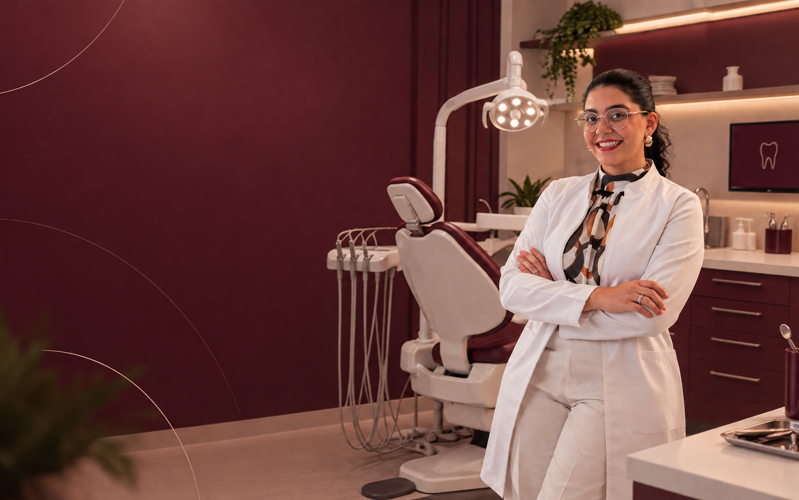

Conhecer você
Escutar sua história e entender suas expectativas para começar com confiança.
ESCUTA
CUIDADO QUE COMEÇA EM VOCÊ
Um olhar atento para você.
Uma odontologia que acolhe, cuida
e valoriza cada sorriso.
PRAZER, DRA. MARIA ANGELICA
Por trás de cada sorriso existe uma história. Seus desejos, suas dúvidas e o que faz você se sentir bem merecem espaço na consulta.
A proposta é simples: uma conversa tranquila, orientações claras e um cuidado pensado para respeitar a sua individualidade.
Conheça essa experiênciaNOSSO CUIDADO
Da primeira conversa aos cuidados do dia a dia, cada etapa começa com atenção ao que você precisa.
Escutar sua história e entender suas expectativas para começar com confiança.
ESCUTAAvaliar suas necessidades e conversar sobre as possibilidades para o seu sorriso.
INDIVIDUALIDADEExplicar cada etapa para que você participe das decisões com tranquilidade.
CONFIANÇAOrientar os cuidados que ajudam a manter a saúde do seu sorriso no dia a dia.
CONTINUIDADESERVIÇOS
Atendimentos planejados de forma individual, com explicações claras e atenção em cada etapa.
Uma consulta cuidadosa para conhecer sua saúde bucal, suas necessidades e seus objetivos.
Cuidados periódicos para prevenir problemas e manter o sorriso saudável no dia a dia.
Tratamentos para recuperar a função e a aparência dos dentes com naturalidade.
Planejamento personalizado para iluminar o sorriso com acompanhamento profissional.
Soluções pensadas para valorizar a harmonia do sorriso e preservar a sua identidade.
Revisões e orientações para manter os resultados e cuidar da saúde bucal ao longo do tempo.
SUA EXPERIÊNCIA
Cuidar do sorriso também é se sentir à vontade para perguntar, entender e escolher.
Um espaço para falar sobre o que você sente e espera do atendimento.
Uma abordagem acolhedora, com atenção às suas dúvidas em cada etapa.
Uma conversa acessível para entender o cuidado e tomar decisões.
VAMOS CONVERSAR
Será um prazer conhecer você e a sua história.
Agende pelo WhatsApp ↗